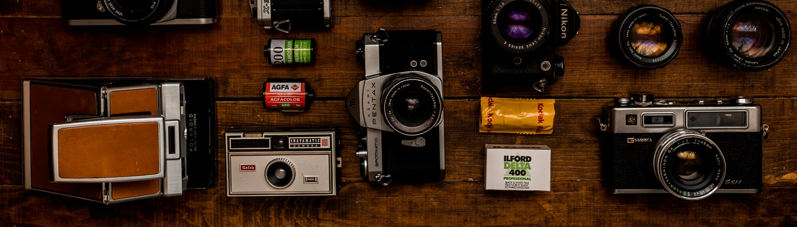

Landscape Photography
“When looking at an extraordinary landscape, there are no desires,no plans,no worries,no past,no present,no future; there is only a deep silence, only a glance!”

Wildlife Photography
"If you want to catch an animal on camera, you need to think like an animal"

Portraiture
"Portraiture is all about good focus and lightning with a good angle"

Food Photography
"food photography depends on lights and decoration of food, it makes you more hunger

Wedding Photography
"The most important thing at a wedding is to photograph the feelings and moments"

Concert Photography
"Concert photography is just a catalyst that will lift you above Cloud9"